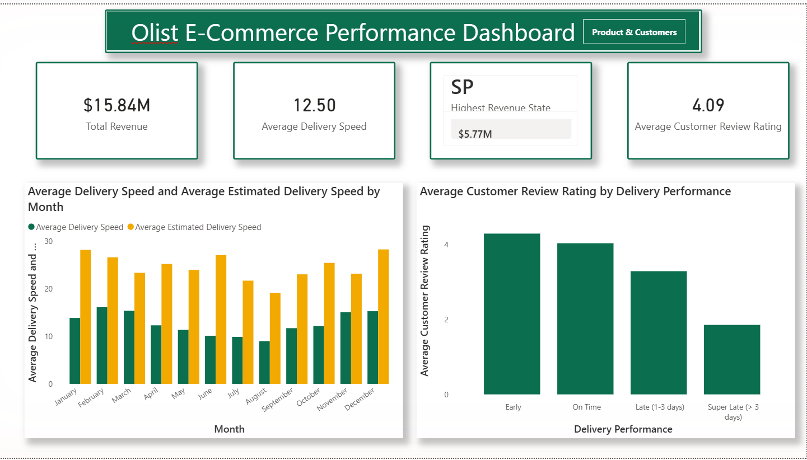
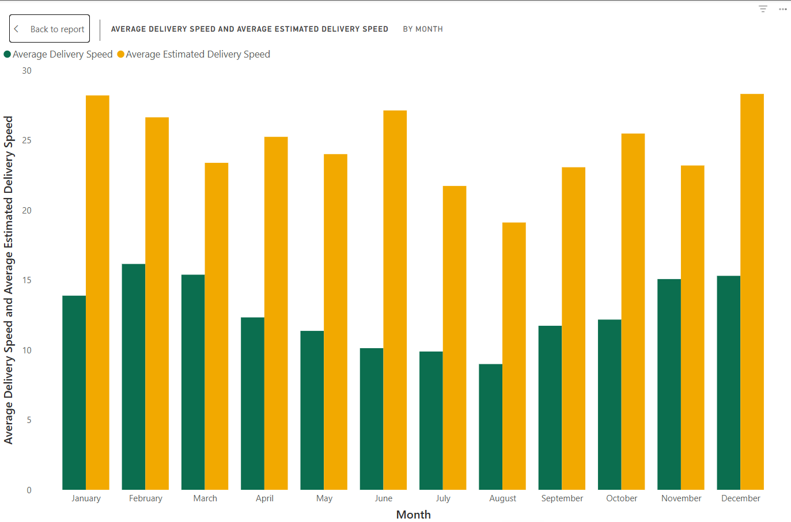
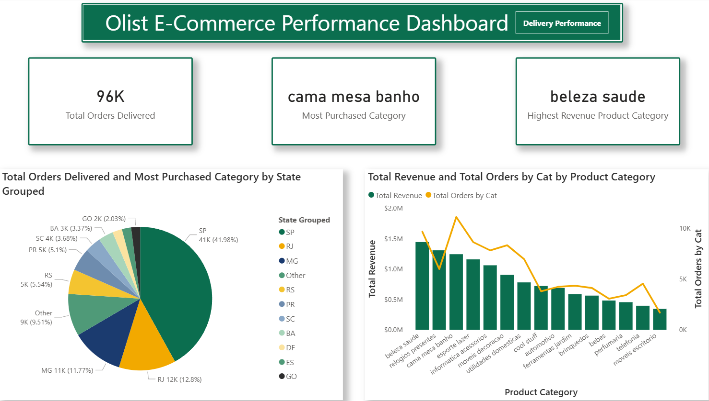
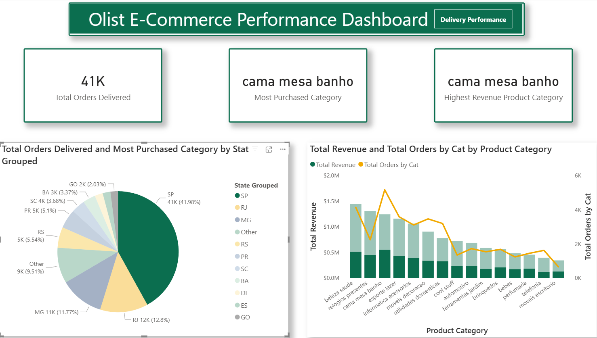
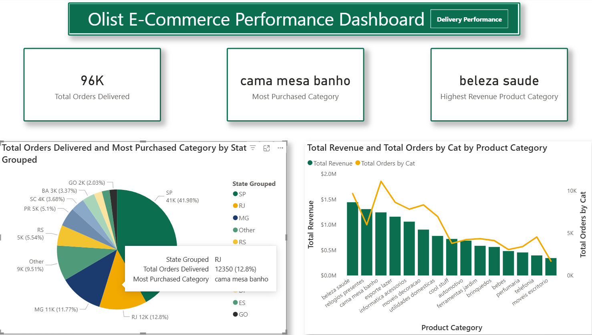

A Power BI portfolio project analysing 96,000+ delivered orders across Brazil.
Built with Power BI | DAX | Power Query | Star Schema Data Modelling
Olist is Brazil's largest department store marketplace, connecting small and medium-sized sellers across the country to major Brazilian retail channels through a single integrated platform. Sellers list products through Olist, and orders are fulfilled and shipped directly to customers across all 27 Brazilian states — making delivery logistics and regional demand two of the most commercially important variables in the business.
This dataset was chosen because it is real-world, multi-table relational data: over 99,000 orders, a genuine geographic spread across Brazil, and a two-year time horizon from September 2016 to October 2018. That combination of scale, structure, and messiness makes it a realistic stand-in for the kind of data a retail or e-commerce business analyst would actually be asked to model and report on.
The project set out to build a professional, two-page Power BI dashboard that answers five commercial business questions relevant to a retail or e-commerce analyst role — covering delivery performance, customer satisfaction, product category economics, and geographic concentration — using a proper star schema, Power Query cleaning, and DAX time-intelligence and ranking measures rather than flat, single-table reporting.
Each question was defined before the model was built, and every KPI and chart on the dashboard maps back to one of these five.
Dataset: Olist Brazilian E-Commerce Public Dataset — available free on Kaggle. Five of the nine available tables were used.
| Table | Role | Rows |
|---|---|---|
| olist_orders_dataset | Dimension | 96,478 (filtered to delivered) |
| olist_customers_dataset | Dimension | 99,441 |
| olist_products_dataset | Dimension | 32,951 |
| olist_order_items_dataset | Fact | 112,650 |
| olist_order_reviews_dataset | Dimension | 99,224 |
One section per business question. Every figure below is confirmed from the dataset — nothing here is estimated or invented.
Olist's average actual delivery time is 12.5 days from order placement to customer receipt. The average estimated delivery time promised at checkout is 24.37 days — nearly double the actual performance. This roughly 12-day gap is consistent across every month in the dataset, with no seasonal exceptions, reflecting a deliberate strategy of conservative delivery promise-setting.
| Delivery Performance | Average Review Score |
|---|---|
| Early (before estimated date) | ~4.3 / 5 |
| On Time (on estimated date) | ~4.0 / 5 |
| Late 1–3 Days | ~3.1 / 5 |
| Super Late (>3 Days) | ~1.9 / 5 |
Orders delivered more than 3 days after the estimated date average just 1.9 out of 5 — a drop of over two full points versus on-time orders.
The most frequently purchased category is cama mesa banho (bed, table & bath goods) — also the dominant category in São Paulo, Brazil's most populous state. The highest revenue-generating category, however, is beleza saude (health & beauty) — a different category entirely. Health and beauty products are purchased less often but at a higher average price point or in higher-margin configurations.
Regional variation in purchasing preferences is confirmed. While cama mesa banho dominates nationally by order volume, individual states diverge — Paraná (PR), for example, shows moveis decoracao (furniture & home decoration) as its top category instead of the national leader. São Paulo (SP) alone generates 41.98% of all orders and $5.77M of the total $15.84M revenue, and the top three states — SP, RJ, and MG — together account for roughly 70% of total order volume.
São Paulo alone accounts for 41.98% of all orders, and the top 10 states by order volume account for approximately 90.5% of all activity — the remaining 17 states collectively contribute just 9.51%.
A Brazil-inspired two-page report with cross-filter interactivity confirmed across every visual — deep green (#0B6E4F), warm gold (#F2A900), and navy (#1B3B6F) throughout.




